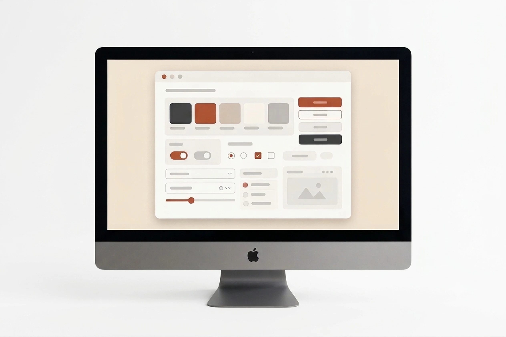
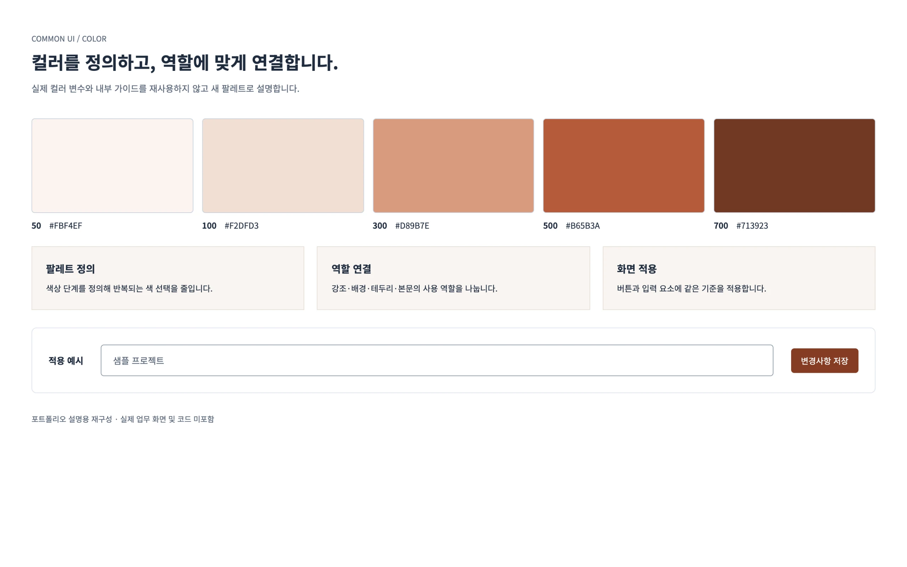
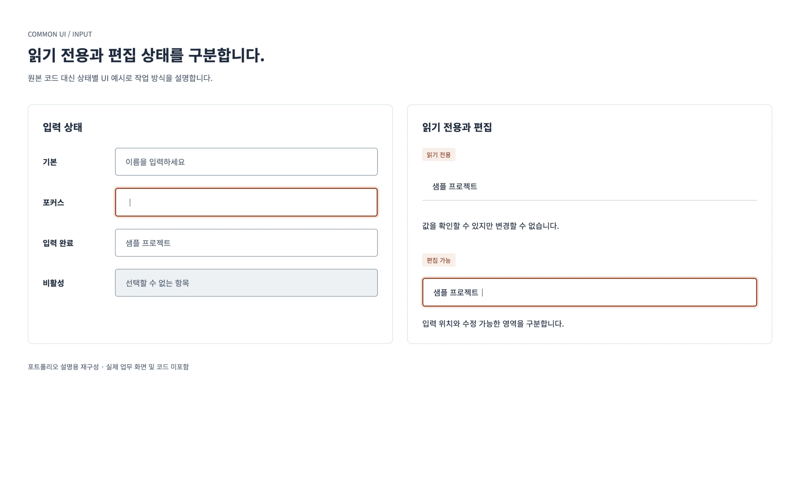
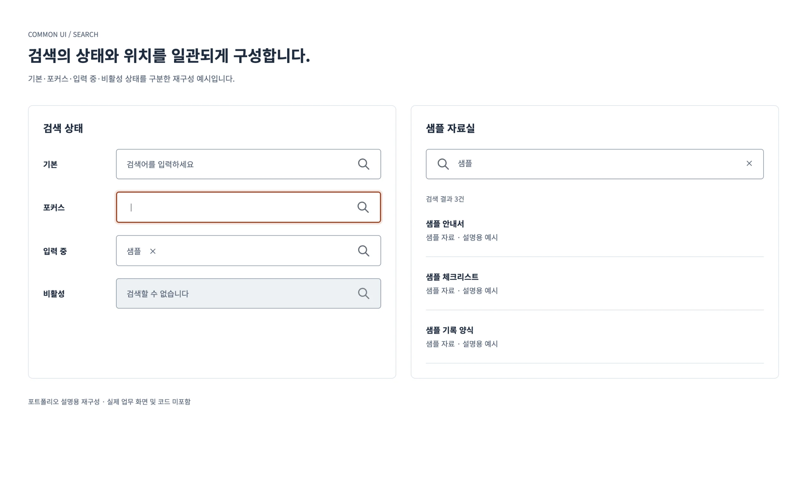

02 입력 UI의 상태와 구현 기준
컬러 정의와 입력·검색 상태를 웹 가이드로 정리했습니다.
01
공통 컬러 기준
설계 내용반복해서 쓰는 색상 단계와 강조·배경·테두리·본문의 사용 역할을 정리했습니다.
02
입력 UI
설계 내용기본 입력과 라벨·설명문이 있는 입력, 읽기 전용·편집 상태의 스타일을 정리했습니다.
03
검색 상태
설계 내용기본·포커스·입력 중·비활성 상태를 구분하고 검색 입력을 콘텐츠 영역 상단에 배치했습니다.
PROJECT 02 · COMMON UI · WEB GUIDE
컬러와 입력·검색 UI의 공통 기준을 기획하고 Figma로 웹 가이드를 디자인했습니다. 선임 디자이너가 재사용 컴포넌트를 구현했습니다. 공개 이미지는 설명용으로 재구성한 화면과 가상 데이터를 사용합니다.
"컬러와 일부 UI 요소를 후속 프로젝트에 재사용"

CASE AT A GLANCE
BCMF·CFS를 포함한 12개 프로젝트에서 컬러값과 일부 UI 요소를 재사용했습니다. 컬러·입력·달력·로고 중 필요한 요소를 프로젝트별 화면에 맞춰 크기나 배치를 조정했습니다.
01 프로젝트 배경
컬러의 사용 역할과 입력·검색 상태를 정리했습니다. 선임이 구현해 Git에 공유한 요소를 후속 작업에서 가져다 썼습니다.
02 입력 UI의 상태와 구현 기준
반복해서 쓰는 색상 단계와 강조·배경·테두리·본문의 사용 역할을 정리했습니다.
기본 입력과 라벨·설명문이 있는 입력, 읽기 전용·편집 상태의 스타일을 정리했습니다.
기본·포커스·입력 중·비활성 상태를 구분하고 검색 입력을 콘텐츠 영역 상단에 배치했습니다.
03 공통 UI 기준·웹 가이드

컬러와 입력·검색 UI 기준


04 회고
공통 컬러 기준을 공유하고, 입력 UI는 화면에 맞게 크기와 배치를 조정했습니다. 공통 기준을 유지할 부분과 화면마다 달라질 부분을 나누어 관리했습니다.
프로젝트의 토큰 참조 코드와 기본·변형 UI를 함께 모아 실제 적용 범위를 더 구체적으로 보여주고 싶습니다.